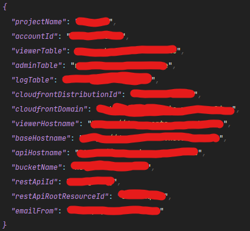
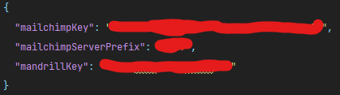
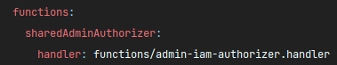
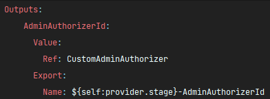
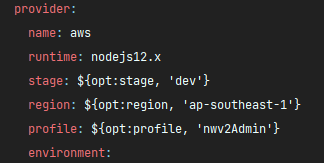
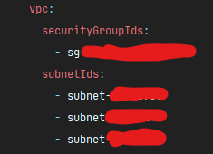

Lambda/API Deployment
Get Ready
Before we begin, ensure that you've obtained a copy of the ENV variables required for all API stacks.
They are named as such:
.env.<STAGE_NAME>.json.secrets.<STAGE_NAME>.json
And they look somewhat like this:


Deployment Order
The API stacks can be deployed in any order except for 2 of them!
And they are:
nwv2-api-admin-iamandnwv2-api-viewer-auth
They need to be deployed first, in no particular order.
The reason for that is they contain declarations to 2 authorizer functions that are imported and used in almost all other stacks.
Relevant excerpts from nwv2-api-admin-iam's serverless.yml:


Deploy
We'll use nwv2-api-admin-iam as an example.
Change directory into the project root, run:
npm install
After which an npm postinstall script will be automatically triggered, the scripts simply goes
into a submodule's folder and run install from within, and then run a TypeScript transpiler.
Make sure both env files are placed under project root.
(The nwv2-api-admin-iam stack actually only requires one, but it doesn't hurt.)
Now for the actual deployment, run:
sls deploy --stage <STAGE_NAME>
# for example: sls deploy --stage dev
If deploying with a different AWSCLI profile:
sls deploy --stage <STAGE_NAME> --profile <PROFILE_NAME>
# for example: sls deploy --stage dev --profile someguy
Or even to a different region:
sls deploy --stage <STAGE_NAME> --profile <PROFILE_NAME> --region <REGION_CODE>
# for example: sls deploy --stage dev --profile someguy --region ap-southeast-1
If any of these variables are not provided, the following defaults will be used instead:
- stage:
dev - profile:
nwv2Admin- This is why we recommend naming your credential
nwv2Admin.
- This is why we recommend naming your credential
- region:
ap-southeast-1
Relevant excerpt:

Example output from a successful deployment:
.
.
.
functions:
sharedAdminAuthorizer: novaweb-api-admin-iam-dev-sharedAdminAuthorizer
createUser: novaweb-api-admin-iam-dev-createUser
deleteUser: novaweb-api-admin-iam-dev-deleteUser
getUsers: novaweb-api-admin-iam-dev-getUsers
updateUser: novaweb-api-admin-iam-dev-updateUser
authenticate: novaweb-api-admin-iam-dev-authenticate
triggerPasswordReset: novaweb-api-admin-iam-dev-triggerPasswordReset
passwordReset: novaweb-api-admin-iam-dev-passwordReset
logout: novaweb-api-admin-iam-dev-logout
layers:
None
Serverless: Removing old service artifacts from S3...
Rinse and repeat.
Important (nwv2-api-analytics)
Although you should be able to deploy all 7 API stacks successfully just by doing the above, there's one caveat.
Our analytics stack nwv2-api-analytics contains references to AWS resources created neither by the
CDK nor the Serverless Stacks.
The resources being referred to are:
- A VPC with:
- A security group, and
- A couple attached subnets
- A Redis database created inside the above VPC
- VPC Endpoints for the following resources:
- DynamoDB (Gateway endpoint)
- S3 (Gateway endpoint)
- SQS (Interface endpoint)
Relevant excerpt:

The hard coded IDs reference existing resources, which, should not cause a problem if you're deploying to the same AWS account.
They are by design shared between stacks anyway.
In any case this should be refactored out. Either by extracting into an env file, or move resource declaration into the CDK project.